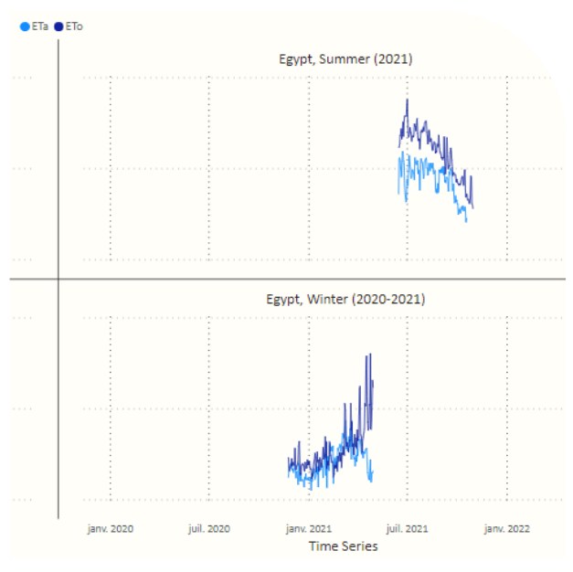
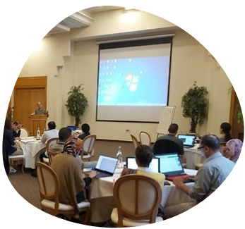

THE NENA REGIONAL EVAPOTRANSPIRATION MEASUREMENT NETWORK
ICARDA, in collaboration with FAO’s Regional Office for Near East and North Africa (RNE), has established the first regional network for field measurement of evapotranspiration
The idea of the network is to build a common regional understanding of ETa measurements (ETa) in the field and through RS on accuracy assessments of RS ETa data of different databases and their analyses and use for agriculture-related applications (e.g., water accounting, water productivity, water management, etc.). Therefore, ICARDA, in collaboration with FAO and six countries in the region - Morocco, Tunisia, Egypt, Jordan, Lebanon, and Palestine, established such a regional ET network to obtain a reliable source of ground measurements of ET with the multiple goals of calibrating and validating RS-based ETa retrievals, calibrating and validating crop models and to do regional synthesis using the measured data in a multi-location, multi-season manner, in the context of regional water scarcity.
Countries
EGYPT
JORDAN
LEBANON
MOROCCO
PALESTINE
TUNISIA
Project Activities

Data query and visualization
ICARDA manages a dashboard that can be used to visualize and query the measured ET data to benefit the interested parties. One can query and compare by location, season, crop, or period.
In order to share global information about water use, and especially in CWANA, last September, ICARDA and the Food and Agriculture Organization of the United Nations (FAO) launched a bi-weekly webinar series over three months on the measurement of evapotranspiration led by global experts and attracting over 1,700 international and regional participants.
SEPTEMBER 15
Comparison of ET estimates from a surface layer scintillometer and a large weighing lysimeter
SEPTEMBER 29
pLessons Learned about Ecosystem Evaporation from a Global Network of Eddy Covariance Sites
OCTOBER 13
ET by Soil Water Balance: Weighing lysimetry and soil water sensing approaches
OCTOBER 27
Fundamentals and Measurements of Surface Energy Balance, including Evapotranspiration, with the Emphasis on Bowen Ratio Energy Balance System
NOVEMBER 10
ET Flux Networking: Latest Tools for Connecting Flux, Remote Sensing & Modelling Communities via Time- and Space-Synchronized Datasets
NOVEMBER 24
ET Measurement Uncertainties and Implications for Model Validation
Events

November 28-29, 2021. Cairo, Egypt ET-Network Regional Restitution Workshop.
Technical reports were prepared to strengthen regional common understanding of evapotranspiration measurement. Access is open and available for all interested parties.
Assessment of Available Field Instruments for Each Institution and Calibration Status, and Recommend Possible Additional Instruments to Complement the Existing Ones
Output 9: Comparison Between Field Data and Remote Sensing Data Analyzed Comparing Evapotranspiration Retrieved Through Various Remote Sensing based Models with Ground Measured Data
ICARDA and the United Nations Food and Agriculture Organization (FAO) recently organized a two-day workshop to document and share the outcomes of a project that uniquely establishes the amount of water used by key crops in regional settings, providing vital data for farming approaches and government policies.
Every year ICARDA participates at Cairo Water Week (CWW), where global experts come together to discuss water challenges and opportunities in one of the most water-scarce regions in the world.
ICARDA’s high-level participation at Cairo Water Week 2022 reflected the organization’s commitment to strengthening partnerships for developing climate-adapted and resilient agri-solutions for smallholder farmers in water-scarce Egypt and beyond.